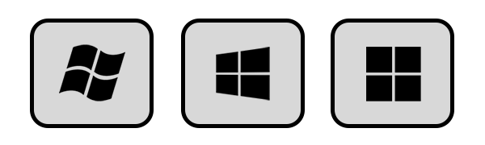

Resources
Welcome to the page of helpful resources.
Below you'll find a treasure trove of tidbits, mostly relating to webstuff and tech. Enjoy!
Windows
If you're a Windows user, here are some helpful tips and software for you.
WinAeroTweaker
There's a lot of bloat and nonsense in Windows nowadays. You can use WinAeroTweaker to:
- Remove ads and tracking from within Windows
- Modify File Explorer navigation items and default behavior
- Hide the notification center and other obstructive features
- Restore classic Windows applications
- Further customize your Windows experience

Ninite.com
An extremely useful website for quickly grabbing software to install on new Windows machines.

Guide: Recommended Setup and Software for New Installs
My recommendedations for how to handle a new Windows install.

Helpful Videos
A series of websites I've created to help manage your Windows instance:
- Clean Up Windows Bloat
- Checklist to Reinstall Windows
- Organizing Files in Windows
- Useful Keyboard Shortcuts
- Move the Location of your Personal Folders
Helpful Keyboard Shortcuts
Here are some extremely useful keyboard shortcuts using the Winkey key on your keyboard. Don't know what that is? Look at the bottom left of your keyboard. It looks like one of these:

Hold down that key in combination with some other keys to do some pretty useful things. For example:
Winkey + Shift + S
Instantly select a region of the screen, grab a screenshot, and copy it to your clipboard.
Winkey + V
Clipboard history: easily see images and text you've recently copied, and pin clipboard copies to be pasted later.
Winkey + ;
Bring up a quick menu of emojis to insert in any text field.
Winkey + arrow keys
Quickly resize windows to half, quarter size, and full screen.
Winkey + Shift + arrow keys
Quickly move windows between one display to another.
Winkey + E
Open File Explorer.
Winkey + L
Lock your PC.
Firefox
All of the coolest stuff available for Mozilla's web browser, Firefox!
Switching from Chrome (Video)
My video guide for how to switch from using Google Chrome (or Microsoft Edge) to Firefox.

My Favorite Extensions
My favorite Firefox extensions:
- uBlock Origin
Block ads and tracking. - Sponsorblock
Skip sponsors in YouTube videos. - Multi-Account Containers
Create profiles for certain browser tab instances. - Dark Reader
Dark theme for any website. - Return Dislike to YouTube
Get the dislike button back. - FireShot
Full-page screenshots.